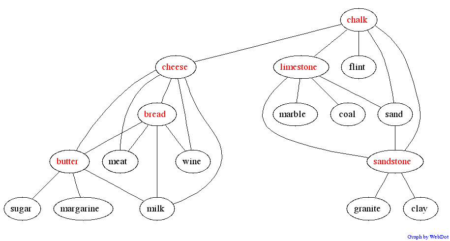

Graph of words showing an idiomatic link.
The phrase "chalk and cheese" is a standard idiom in British English,
used to contrast two objects that are very dissimilar.
You can see this in the graph because the link between chalk
and cheese links two otherwise unrelated clusters - none of the
other neighbours of cheese are linked to any of the other
neighbours of chalk.
You can build a similar graph using this Infomap
demo.
